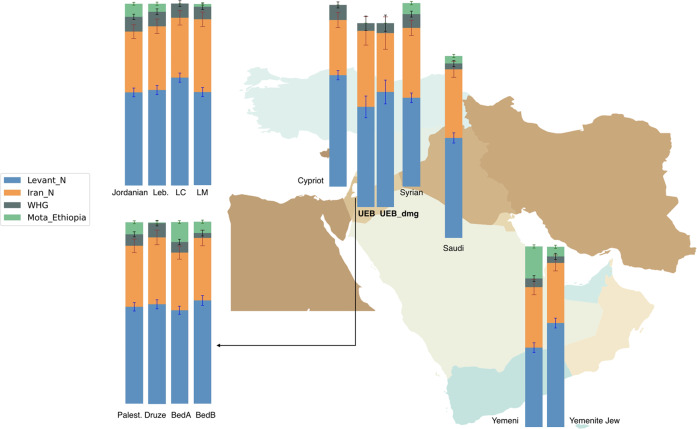
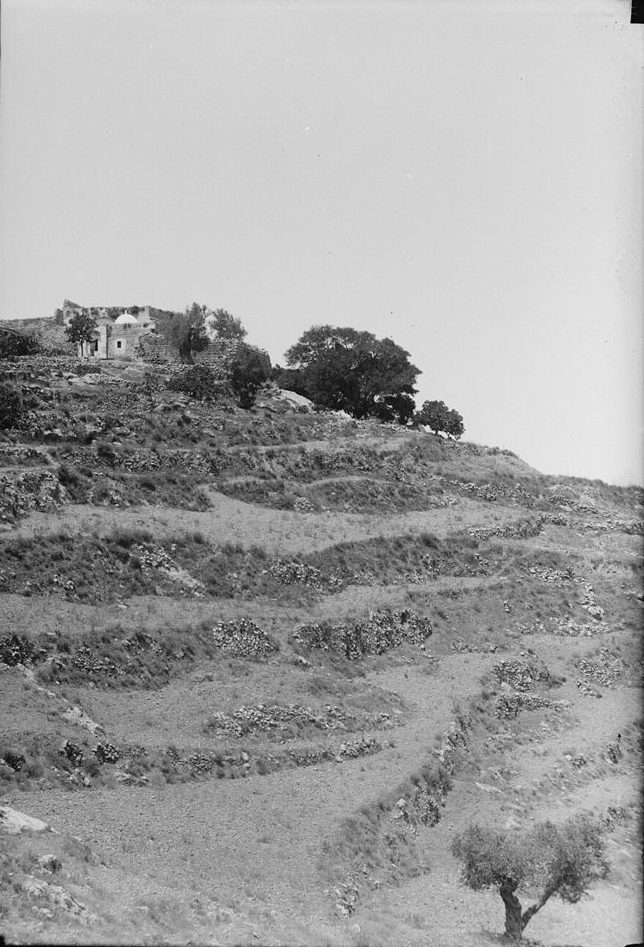

Esta página es una traducción del original alemán (versión del 15 de noviembre de 2026). Los enlaces llevan a páginas en alemán, salvo que se indique lo contrario. Las citas de fuentes en inglés se han traducido directamente del original inglés.
«Árabe» es una palabra para una lengua y una cultura, no para una ascendencia. Los palestinos hablan árabe y también se consideran a sí mismos parte del mundo árabe, pero sus antepasados, en su inmensa mayoría, ya vivían en el Levante en la Edad del Bronce. El ADN antiguo lo muestra: la población de la tierra nunca fue sustituida, ni por los filisteos, ni por los romanos, ni por la conquista árabe. Esta trajo lengua y religión y una afluencia de personas menor y medible. La tierra nunca estuvo «vacía»: su gente siempre estuvo allí.
¿«Una tierra sin pueblo»? La genética dice: la gente siempre estuvo allí
La frase «Una tierra sin pueblo para un pueblo sin tierra» fue uno de los lemas más eficaces del sionismo. El ADN antiguo la refuta desde un lado inesperado: muestra un poblamiento ininterrumpido por la misma población desde la Edad del Bronce, a lo largo del dominio de egipcios, asirios, babilonios, persas, griegos, romanos, bizantinos, árabes, cruzados, mamelucos y otomanos. Los gobernantes cambiaron, la gente se quedó. Una tierra cuyos habitantes viven allí, de forma demostrable, desde hace 4.000 años nunca estuvo vacía, y los palestinos expulsados en 1948 eran los descendientes de esas personas.
- 1«Una tierra sin pueblo»: acuñado por sionistas cristianos en el siglo XIX, difundido por Israel Zangwill en 1901 («The Return to Palestine», New Liberal Review, diciembre de 1901, pág. 615; sobre el origen de la fórmula, Diana Muir, Middle East Quarterly 15/2, 2008).
Verificación: refutado → Pruebas 1, 2 y 5 a la derecha. - 2«Hicimos florecer el desierto»: la tierra habría estado desolada antes de la inmigración sionista. La declaración fundacional de Israel del 14/5/1948 dice de los pioneros: «they made deserts bloom».
Verificación: engañoso Es cierto que asentamientos sionistas pusieron en cultivo superficies concretas; pero el país en su conjunto estaba cultivado y exportaba → Pruebas 3 y 5 a la derecha. - 3«Los árabes solo inmigraron con el sionismo»: así lo sostuvo Joan Peters en 1984 (From Time Immemorial), atraídos por el trabajo y la prosperidad.
Verificación: refutado Yehoshua Porath demostró el uso parcial y tendencioso de las fuentes en el libro («Mrs. Peters's Palestine», New York Review of Books, 16/1/1986) → Pruebas 1 y 2 a la derecha. - 4«Los palestinos son conquistadores árabes del siglo VII»: extranjeros que podrían vivir en cualquier otro lugar (fórmula extendida, verificación de hasbara n.º 8; aquí no se nombra a un único autor).
Verificación: refutado → Pruebas 1 y 4 a la derecha y «Árabe»: una palabra para la lengua.
- 1Genética: La población nunca fue sustituida. Incluso los filisteos, que dieron nombre a la tierra, se fundieron con la población local en dos siglos; la conquista árabe trajo lengua y religión y una mezcla, pero no un pueblo nuevo (→ más abajo).
- 2Cifras: En época bizantina vivían en la tierra entre 1 y 1,5 millones de personas; en 1914, unas 797.000 (Justin McCarthy), de ellas unos 59.000 judíos; el censo británico de 1922 contó 757.182 habitantes (→ Épocas).
- 3Agricultura: Laderas en terrazas, olivares, trigo, jabón de Nablus, naranjas de Jaffa: en 1938 Palestina exportó unos 15 millones de cajas de cítricos, la mayor parte de propiedad árabe.
- 4Nombres, lengua, costumbres: Las aldeas llevaban los antiguos topónimos, el árabe de los campesinos conserva palabras arameas, sus santuarios están en las mismas alturas (→ tres testigos más).
- 5Los propios sionistas lo sabían: Ajad Haam escribió en 1891, tras su viaje: «En el extranjero estamos acostumbrados a creer que la Tierra de Israel está hoy casi totalmente desolada, un desierto sin sembrar … Pero en verdad no es así. En todo el país es difícil encontrar tierra cultivable que no esté ya cultivada.» (traducido del alemán; Ajad Haam, «La verdad desde la Tierra de Israel», 1891; en inglés en Alan Dowty, Israel Studies 5/2, 2000)
Por qué importa: El relato de la tierra vacía nunca fue solo un error. Hacía invisibles a las personas que vivían allí, y lo que es invisible no se puede expulsar, según esa lógica. Quien dice «tierra sin pueblo» no tiene que explicar la Nakba. La genética devuelve a estas personas su historia: no eran gente de paso, ni recién llegados del siglo XX, ni «árabes que podrían vivir en otra parte», sino la población de la tierra.
Más sobre esto en la revisión de la hasbará: «Una tierra sin pueblo» y otros siete mitos fundacionales (afirmaciones 1, 2, 7, 8 y 28) · La Nakba de 1948 (en español) · Los judíos en la tierra. Y expresamente: este hallazgo no es un argumento contra las raíces judías en la tierra; ambos pueblos comparten los mismos antepasados antiguos (→ más abajo).
«Árabe»: una palabra para la lengua, no para la ascendencia
Antes de la conquista árabe de 634–640, la gente de Palestina hablaba arameo y griego y era mayoritariamente cristiana, judía y samaritana. En los siglos siguientes el árabe se impuso como lengua cotidiana, y gran parte de la población se convirtió poco a poco al islam. Arqueológicamente se observa continuidad del poblamiento: las aldeas siguieron habitadas, no fueron repobladas (Gideon Avni, The Byzantine–Islamic Transition in Palestine, Oxford 2014). También las comunidades cristianas adoptaron el árabe sin cambiar de religión. «Árabe» pasó a ser, sobre todo, quien hablaba árabe.
La Carta Nacional Palestina de 1968 habla del «pueblo árabe palestino», que es «parte integrante de la nación árabe» (art. 1), y define a los palestinos como «aquellos nacionales árabes que, hasta 1947, residían habitualmente en Palestina» (art. 5; texto íntegro, en inglés). Ser árabe y palestino no es una contradicción: lo uno describe lengua y cultura, lo otro un pueblo con una patria. La palabra solo se vuelve problemática cuando se usa para afirmar que los palestinos son extranjeros en su propia tierra.
Cómo se usó la etiquetaDe la «población no judía» a «árabes que podrían vivir en otra parte»
El propio Ben-Gurión escribió en su ensayo «Sobre el origen de los fellahs» (Luach Achiezer, Nueva York 1917, págs. 118–127) que los campesinos palestinos descendían en gran parte de la antigua población rural judía; «no cabe duda de que mucha sangre judía corre por sus venas» (traducido de la cita inglesa en Judea Pearl, «Early Zionists and Arabs», Middle East Quarterly 15/4, 2008, nota; reimpreso en la recopilación de Ben-Gurión Anachnu u-Shchenenu [«Nosotros y nuestros vecinos»], Tel Aviv 1931, págs. 13–25; no se pudo consultar el original hebreo). Perseguía entonces un objetivo político, pero la tesis contradice la imagen posterior de los «árabes inmigrados».
Declaración Balfour: La mayoría de la población –unos nueve de cada diez habitantes– no aparece por su nombre, sino solo como «comunidades no judías existentes en Palestina», cuyos «derechos civiles y religiosos» deben salvaguardarse; de derechos políticos no se habla (texto íntegro, en inglés).
Golda Meir, primera ministra, en el Sunday Times del 15/6/1969: «No existía tal cosa como los palestinos.» (inglés: “There were no such thing as Palestinians.”; citado según la versión difundida; no se pudo consultar la página original del periódico). → Afirmación n.º 2 en la página de hasbará
Joan Peters, From Time Immemorial: los árabes de Palestina habrían inmigrado en gran parte solo con el sionismo. Historiadores especializados como Yehoshua Porath y Norman Finkelstein demostraron que las cifras del libro estaban manipuladas. → Afirmación n.º 28
El patrón: quien llama a los palestinos solo «árabes» sugiere que pertenecen a «los países árabes» y no al suyo propio. La genética refuta esta insinuación, con hallazgos que se documentan a continuación estudio por estudio.
Cómo leer los diagramas
- 1ADN antiguo (aDNA): material genético de huesos, casi siempre del peñasco del cráneo. Permite comparar directamente a quien vivió hace 4.000 años con quien vive hoy.
- 2Genoma: todo el material genético de una persona. Cada uno lo hereda la mitad de la madre y la mitad del padre; tras diez generaciones procede de más de mil antepasados.
- 3Población fuente: una población muy antigua que sirve de referencia, p. ej. los primeros agricultores del Levante hace unos 10.000 años («Levant_N») o de los montes Zagros en Irán («Iran_N»). Los colores de los diagramas son esas poblaciones fuente, no pueblos actuales.
- 4Mezcla («admixture»): la proporción de una ascendencia añadida más tarde. Una mezcla del 7 % significa: en promedio, alrededor del 7 % del material genético procede de esa fuente.
- 5qpAdm: un método de cálculo que comprueba si un grupo puede describirse como mezcla de determinadas fuentes e indica las proporciones con margen de error (p. ej. 93 % ± 1,6).
- 6Barras ADMIXTURE: cada persona es una línea vertical; los colores son componentes hallados estadísticamente. Un componente es un patrón, no una prueba de origen.
- 7Haplogrupo del cromosoma Y: una familia de linajes paternos que pasa de padre a hijo casi sin cambios. Muestra un único hilo de ascendencia entre miles.
- 8Sustituto: donde falta una fuente, los investigadores usan un representante cercano; «Mota», por ejemplo, es un hombre de Etiopía de hace 4.500 años que representa a «África oriental». Los porcentajes son valores de modelo, no proporciones de un árbol genealógico.
Quiénes eran genéticamente los «cananeos»
El mayor estudio hasta la fecha sobre la Edad del Bronce en el Levante meridional (Agranat-Tamir et al., Cell 2020, texto completo) analizó 73 genomas de Meguido, Jasor, Yehud, Abel Bet Maacá y Baq'ah. Resultado: las personas que en las fuentes se llaman «cananeos» se parecían entre sí más que a nadie, y ya eran a su vez una mezcla: del 48 al 57 % de los primeros agricultores del Levante y el resto de inmigrantes de los Zagros y el Cáucaso.
- 1Para los actuales grupos de habla árabe y judíos el estudio afirma que son «compatibles con tener más de un 50 % de ascendencia relacionada con Oriente Próximo». Es un límite inferior.
- 2En el texto, el estudio no da valores para los palestinos; en su figura 5, sin embargo, aparecen como uno de 17 grupos actuales: según el método, alrededor del 80–89 % corresponde allí a una fuente común de Meguido de la Edad del Bronce e Irán calcolítico, un 8–12 % a África oriental (sustituto: somalíes) y un 3–8 % a Europa.
- 3Estos valores están leídos de la figura; las cifras exactas figuran en la tabla S4 del estudio, que no se pudo consultar. Tampoco es una cifra pura de «cananeos», porque la figura agrupa Meguido e Irán en una sola fuente.
La continuidad está documentada de forma más directa para el Líbano. Allí se pudieron comparar genomas de 3.700 años de Sidón con libaneses actuales:
Modelo con genomas de 3.700 años
Gráfico propio según Haber et al. 2017, American Journal of Human Genetics 101/2, fig. 3C. El estudio se refiere a los libaneses; para los palestinos no existe una cifra comparable.

Un estudio posterior de Beirut (Haber et al. 2020) muestra además afluencias menores en la Edad del Hierro (12–37 % de Anatolia/sureste de Europa), en época helenística (6–12 % de Asia meridional y central) y en época otomana (Cáucaso); de los romanos apenas quedó rastro. Ninguna afluencia sustituyó a la población.
Lo que está documentado sobre los propios palestinos
No existe ninguna cifra publicada del tipo «el x % de los palestinos desciende de los cananeos». Ninguno de los grandes estudios ha muestreado de nuevo a palestinos; figuran como grupo de comparación de conjuntos de datos más antiguos. Quien cite tal porcentaje, cita mal. Lo documentado es lo siguiente.
Genoma completoLa base es levantina y de Asia occidental
Néguev
Gráfico propio según Srigyan et al. 2022, Communications Biology 5:554, tabla 2 (modelo qpAdm; error por proporción de unos ±1–4 puntos porcentuales). Cómo leerlo: Los colores son poblaciones fuente antiquísimas, no pueblos. El modelo no mide «cananeos» ni «árabes»: ambos se componen a su vez de estas poblaciones fuente. Pero muestra con claridad: la base de todos los grupos es de Asia occidental; la proporción africana de los palestinos ronda el 6–7 %.

Lo que se añadióUna afluencia medible desde Arabia y África
Los estudios muestran en los palestinos –como en jordanos y sirios– una afluencia desde la península arábiga y desde África que apenas aparece en cristianos libaneses y drusos:
- 1Haber et al. 2013: Un componente predominante en Arabia y África oriental supone alrededor del 25 % en palestinos, jordanos y sirios, y del 4–20 % en otros levantinos. La estructura genética del Levante sigue hoy a la religión: con el islam se abrieron nuevos círculos matrimoniales.
- 2Srigyan et al. 2022 y Almarri et al. 2021: Proporción de África oriental en los palestinos de alrededor del 6–7 %, en los drusos cercana a cero; la afluencia africana se sitúa sobre todo en los últimos 2.000 años, en general hace 500 a 1.000 años (Almarri 2021).
- 3Prueba directa de inmigrantes árabes: Dos difuntos de época omeya (665–768) en el sur de Siria se parecen genéticamente a los saudíes y beduinos actuales. El estudio deja expresamente abierto cuán grande fue esta afluencia en conjunto (Srigyan 2022).

En resumen: Según el método, entre unos pocos puntos y aproximadamente una cuarta parte del material genético de los palestinos procede de afluencias de los dos últimos milenios, sobre todo de Arabia y África. Es una mezcla, no una sustitución. La inmensa mayoría es la herencia de las personas que viven en el Levante desde hace milenios.
Dieron nombre a la tierra y se fundieron con su población
Los filisteos llegaron por mar a la costa sur hacia el 1200 a. C.; de ellos deriva el nombre «Palestina» (→ Épocas). Las tumbas de Ascalón muestran lo que ocurrió genéticamente:
Gráfico propio según Feldman et al. 2019, Science Advances 5:eaax0061, fig. 3B y resumen (Ascalón, 10 personas). La barra de la Edad del Hierro temprana muestra el valor máximo; según la fuente de referencia, el rango va del 15,7 ± 9,1 % (estepa) al 43,1 ± 19,2 % (Creta).
La inmigración fue, por tanto, real y al principio notable, pero en dos siglos como máximo su herencia se había fundido con la población local (Feldman et al. 2019). Los autores no se pronuncian sobre los palestinos actuales. Una señal similar de Anatolia y el sureste de Europa aparece en la misma época también en Beirut: afecta a toda la costa, no solo a los filisteos.
Palestinos y judíos: más emparentados de lo que ambas partes suelen querer oír
Según Nebel et al. 2000/2001: proporción de cromosomas Y que pertenecen al mismo acervo, común a ambos grupos. Solo linaje paterno.
Ya los estudios del cromosoma Y de 2000/2001 encontraron un gran acervo común; el haplotipo Y árabe más frecuente está estrechamente emparentado con el llamado «haplotipo modal de Cohen» (Nebel 2000, Nebel 2001). Y Agranat-Tamir 2020 encuentra para grupos de habla árabe y judíos por igual más de un 50 % de ascendencia de Oriente Próximo; en los judíos asquenazíes se añade una gran proporción europea.
Gráfico propio según Nebel et al. 2001, American Journal of Human Genetics 69/5, tabla 1: proporción de hombres con el haplogrupo Y «Eu 10» (linaje paterno). Los autores suponen que una parte llegó de la península arábiga «durante los dos últimos milenios»: una hipótesis, no una medición.
Nombres, lengua, costumbres: lo que la gente llevó consigo a lo largo de los milenios
La genética muestra que la población se quedó. Otros tres hallazgos, independientes entre sí, muestran cómo: los campesinos de Palestina conservaron los antiguos topónimos, mantuvieron palabras de la lengua que se hablaba antes del árabe y cuidaron santuarios en los mismos lugares que sus antepasados. Ninguno de estos hallazgos prueba por sí solo una ascendencia; junto con la genética ofrecen una imagen clara: en la misma tierra siguió viviendo el mismo mundo campesino.
Topónimos: conservados «con la leche materna»
«Pero hay en Palestina otra clase de tradición, con la que los monasterios no han tenido nada que ver: […] la conservación de los antiguos nombres de lugares entre la gente común. Es una tradición verdaderamente nacional y autóctona; […] absorbida por el campesino con la leche materna […]. Tras la conquista musulmana, cuando la lengua aramea cedió poco a poco ante el árabe, su pariente, los nombres propios de los lugares […] encontraron aquí fácil entrada, y así han seguido viviendo en los labios de los árabes, ya sean cristianos o musulmanes, habitantes de ciudades o beduinos, hasta nuestros días.»
El teólogo estadounidense Edward Robinson y el misionero arabófono Eli Smith recorrieron Palestina en 1838. Su método: preguntaban a los campesinos los nombres de sus aldeas y ruinas y los comparaban con la Biblia, Flavio Josefo y Eusebio.
- 1Así reencontraron decenas de lugares bíblicos cuya ubicación los monasterios ya no conocían desde hacía siglos: Betel, por ejemplo, había sido redescubierto «solo en los últimos tres o cuatro años», y «entre la gente común» (vol. 2, pág. 130).
- 2El británico Survey of Western Palestine lo confirmó en 1881: muchos nombres árabes son «supervivencias de nombres nabateos, hebreos, cananeos» más antiguos (E. H. Palmer, Arabic and English Name Lists, prefacio; Escaneo).
- 3De unos 9.000 nombres registrados, según Meron Benvenisti, aproximadamente una décima parte es de origen hebreo-arameo.
- 4El investigador israelí Yoel Elitzur tituló su tesis doctoral de 1993 «Topónimos antiguos conservados en boca de los árabes del país»; su libro de 2004 examina 177 nombres identificados con seguridad.

20 ejemplosEl nombre árabe y el antiguo que hay detrás
| Nombre árabe | Nombre antiguo | Prueba de la identificación | Estado | Destino |
|---|---|---|---|---|
| Beitin | Betel | Robinson 1841, vol. 2, págs. 127–130; Palmer 1881 | seguro | – |
| al-Yib | Gabaón | Robinson vol. 2, págs. 135–139; asas de jarra con la inscripción «gbʿn» de la excavación de 1956–1962 | seguro | – |
| ʿAnata | Anatot, patria de Jeremías | Robinson vol. 2, pág. 108 («sin duda»); Palmer pág. 283 | seguro | – |
| Seilun | Siló | Robinson vol. 3, págs. 85–89 | seguro | – |
| Taʿannek | Taanac | Robinson vol. 3, pág. 177; Palmer | seguro | – |
| Beit Lahm | Belén | Robinson vol. 2: «Nadie ha dudado nunca …» | seguro | – |
| Mukhmas | Micmás | Robinson vol. 2, pág. 116 | seguro | – |
| Yifna | Gofna | Robinson vol. 3; Palmer | seguro | – |
| Arīḥā | Jericó | Robinson vol. 2 | seguro | – |
| Isdud | Asdod | Robinson vol. 3 («nadie duda») | seguro | despoblada en 1948 |
| al-Mayadal ʿAsqalan | Ascalón | fuentes antiguas y árabes | seguro | despoblada en 1948–1950 |
| Yibna | Jabne/Yavne | Robinson vol. 2; Palmer pág. 276 | seguro | despoblada en 1948 |
| Beisan | Bet Seán (gr. Escitópolis) | Robinson vol. 3, pág. 174; Palmer | seguro | despoblada en 1948 |
| Beit Yibrin | Bet Guvrin (rom. Eleuterópolis) | Robinson vol. 2, pág. 412 | seguro | despoblada y destruida en 1948 |
| Zirʿin | Jezrael | Benvenisti 2000, págs. 34–35 | seguro | despoblada en 1948 |
| al-Ludd | Lod (gr. Lida/Dióspolis) | Robinson vol. 1, pág. 376; Palmer | seguro | expulsada en gran parte en 1948 |
| ʿImwas | Emaús (rom. Nicópolis) | Robinson vol. 1, pág. 376; Palmer pág. 283 | seguro (si es el Emaús de Lc 24: discutido) | destruida en 1967 |
| ʿAkka | Acre (gr. Ptolemaida) | Robinson vol. 1, pág. 376 | seguro | – |
| Nablus | Neápolis (griego, 72 d. C.) | Robinson vol. 3, pág. 113 | seguro – un nombre griego que perduró | – |
| Kafr Kanna | Caná (Jn 2) | tradición eclesiástica; Robinson la rechaza (vol. 3, págs. 204–208) | discutido | – |
Nablus muestra que también perduraron nombres no semíticos cuando arraigaban en el pueblo; pero en general desaparecieron los pomposos nombres grecorromanos (Dióspolis, Nicópolis, Ptolemaida), y los antiguos semíticos siguieron vivos (Robinson vol. 1, pág. 376, nota 1). El lugar antiguo se hallaba a veces en una colina junto a la aldea actual; eso no cambia la continuidad del nombre.
A partir de julio de 1949 el Gobierno israelí creó comités de nombres, primero para el Néguev y desde 1951 para todo el país; hasta 1958 propusieron unos 3.000 nombres nuevos. El primer ministro Ben-Gurión escribió al respecto: «Estamos obligados a eliminar los nombres árabes por razones de Estado.» (traducido de la cita inglesa en Meron Benvenisti, Sacred Landscape, 2000, pág. 14). De las 418 aldeas despobladas en 1948 según el recuento de Walid Khalidi, 182 se encuentran hoy en bosques y zonas de recreo y 108 en localidades judías; la mayoría de sus nombres fueron borrados, los demás en su mayoría hebraizados (Noga Kadman, Erased from Space and Consciousness, 2015).
Para restaurar nombres «bíblicos», los comités recurrieron precisamente a los nombres que los campesinos palestinos habían conservado: Yibna se convirtió en Yavne, Zirʿin en Yizreʿel, Beit Dayan en Beit Dagon (Benvenisti, págs. 34–35). En el Néguev, al menos 333 de los 533 nuevos nombres hebreos se basan en modelos árabes (pág. 17). Las personas que habían llevado esos nombres durante dos milenios ya habían sido expulsadas para entonces. → Robo de la memoria
La lengua: arameo bajo el árabe
Cuando llegaron los ejércitos árabes en 634, la gente de Palestina hablaba arameo –en varias formas, entre ellas el arameo cristiano-palestino– y griego. El árabe no se impuso de la noche a la mañana, sino poco a poco, del siglo VII al X (Ibrahim Bassal, Universidad de Haifa, The Levantine Review 2015, págs. 86, 93; acceso abierto).
Seguir leyendo (1 párrafo)
La gente cambió de lengua y se llevó palabras de la antigua, sobre todo de la vida cotidiana en el campo, en la casa y en la almazara. Un proyecto de investigación de la UE en la Universidad de Tel Aviv (2022–2025) habla expresamente de un «continuo lingüístico hebreo → arameo → árabe palestino» en el país (HALSPA).
| Árabe palestino | Significado | Origen | Prueba |
|---|---|---|---|
| kafr (Kafr Qasim, Kafr Kanna …) | aldea | arameo kaprā | Fraenkel 1886, pág. 281: «sicher entlehnt» («préstamo seguro») |
| faddān | yugo doble, yunta de bueyes; después, medida de superficie | arameo paddānā | Fraenkel 1886, pág. 131 |
| la palabra para la era | era (de trillar) | arameo iddrā | Fraenkel 1886, pág. 136 |
| lakkīd | peso de prensa de la almazara | hebreo de la Misná (siglos II/III) | Neishtadt 2025, págs. 439–447: «de forma convincente» una palabra de sustrato |
| lattūn | horno de cal | arameo ʾattūn («horno») | Neishtadt 2025, pág. 442 |
| zanbīl | cesta | acadio zanbīlu, a través del arameo | Bassal 2015, pág. 94 |
| Kānūn, Šbāṭ, Ādār, Nīsān, Ayyār, Ḥazīrān, Tammūz, Āb, Aylūl, Tišrīn | los nombres de los meses del Levante | babilonio-arameo | Bassal 2015, págs. 94–95 |

- Sostiene: El vocabulario arameo en la agricultura, la construcción y el calendario está ampliamente reconocido por la investigación. Los nombres levantinos de los meses, por ejemplo, son babilonio-arameos: Kānūn y Ḥazīrān ni siquiera aparecen en el calendario judío, sino que son típicamente sirio-arameos.
- No sostiene: Palabras como Beit (casa), ʿAin (fuente) o Tell (colina) son semíticas comunes y no prueban nada; Deir (monasterio) es incluso una palabra genuinamente árabe (Fraenkel 1886, pág. 267). Si también la fonética y la gramática llevan huellas arameas es discutido.
- Abierto: Falta aún un estudio exhaustivo específico para Palestina, dice el propio Bassal; las listas de palabras proceden en parte de aldeas cristianas de Galilea.
Mostrar fuentes
Fuentes: Siegmund Fraenkel, Die aramäischen Fremdwörter im Arabischen, Leiden 1886 (Escaneo) · Ibrahim Bassal, «Hebrew and Aramaic Elements …», The Levantine Review 4/1 (2015) · Mila Neishtadt, «Rabbinic Hebrew kyd ~ ʿkyd: Insights from Palestinian Arabic», en: Festschrift Geoffrey Khan, Cambridge 2025.
Costumbres: santuarios en las mismas alturas
El médico y folclorista jerosolimitano Tawfiq Canaan (1882–1964, → Personas) registró en los años veinte los santuarios de las aldeas palestinas. En 26 aldeas alrededor de Jerusalén contó: el 70 % de los santuarios estaban en cimas de colinas o montes, a menudo bajo un árbol viejo o junto a una fuente, tal como la Biblia describe los «lugares altos» cananeos (Ez 6,2–3).
Seguir leyendo (1 párrafo)
Votos, ofrendas en árboles y fuentes, árboles sagrados que nadie podía talar: esta religión popular la compartían por igual musulmanes y cristianos de las aldeas.
Los campesinos de Palestina son «herederos y, en cierta medida, descendientes de los habitantes paganos de tiempos prebíblicos, que construyeron los primeros lugares altos». «Es notable cuántas ideas han permanecido prácticamente inalteradas durante miles de años.»


- No todo es antiguo: La gran fiesta de Nabi Musa cerca de Jericó, por ejemplo, la instituyó el sultán Baibars en el siglo XIII, como escribe el propio Canaan (pág. 299).
- Los primeros observadores tenían prejuicios: Estudiosos bíblicos europeos del siglo XIX como Claude Conder o Charles Clermont-Ganneau veían en los campesinos «restos vivientes» de la época bíblica (traducido del alemán) y los llamaban descendientes de los cananeos (citado en Samuel Ives Curtiss, Primitive Semitic Religion To-day, 1902, págs. 260–262; Escaneo): buscaban ilustraciones de la Biblia, no a los propios palestinos.
- Las costumbres viajan: El folclore actual ve con escepticismo las tesis generales de «supervivencias», porque costumbres similares también pueden surgir de nuevo. El historiador Salim Tamari califica el trabajo de Canaan y su círculo de etnografía «nativista», que fue también una respuesta política a la imagen de una tierra sin cultura.
- Lo que queda: Las costumbres son un indicio de la continuidad de la forma de vida rural, no una prueba de ascendencia. Esa la aporta la genética, y todos los hallazgos juntos muestran lo mismo.
Ningún título de propiedad, para nadie
Los autores del estudio más importante subrayan ellos mismos que su método «no puede probar por sí solo que las identidades de grupo del pasado estuvieran relacionadas con la genética» (Agranat-Tamir 2020). El derecho de los palestinos a su tierra, al retorno y a la autodeterminación se deriva del derecho internacional y de que viven allí desde hace generaciones, no de porcentajes. Valdría igual si un antepasado procediera de Arabia, Egipto o el Cáucaso. Esta página refuta con la genética una insinuación; no fundamenta con ella ninguna reivindicación. → Los judíos en la tierra
- «Los palestinos son árabes inmigrados» Verificación: refutado: por la continuidad desde la Edad del Bronce (Agranat-Tamir et al. 2020; autores, más arriba).
- «Los judíos son europeos, solo los palestinos son auténticos cananeos» Verificación: refutado: los grupos judíos tienen una gran proporción de Oriente Próximo (Agranat-Tamir et al. 2020: más del 50 %). Aquí no se nombra a un único autor de esta fórmula.
- Un artículo científico sobre los palestinos (Arnaiz-Villena et al. 2001) fue retirado por la editorial; por eso no se usa aquí como prueba.
- Para la propia Palestina faltan genomas antiguos de época bizantina e islámica (aprox. 200–1500 d. C.); la laguna se cubre en parte con datos del Líbano y Siria.
- No se encontraron, para los años 2014–2026, estudios nuevos que muestreen específicamente a palestinos ni estudios del linaje materno (ADNmt).
- Los porcentajes dependen del modelo: para los mismos datos palestinos, un modelo da un 53,5 % de Levante neolítico, otro un 40 % (aunque el segundo se ajusta mal).
- Los beduinos del Néguev son un grupo propio con una relación mucho más fuerte con la península arábiga.
- Agranat-Tamir 2020: no se pudieron consultar los valores exactos para los palestinos (tabla S4); arriba figuran valores aproximados leídos de la figura 5. El estudio de Behar et al. 2010 (Nature 466) no es de libre acceso; por eso no se usan aquí sus afirmaciones sobre palestinos y beduinos.
Estudios (todos revisados por pares): Agranat-Tamir et al., «The Genomic History of the Bronze Age Southern Levant», Cell 181/5 (2020) → · Haber et al., «Continuity and Admixture in the Last Five Millennia of Levantine History», AJHG 101/2 (2017) → · Haber et al., «A Genetic History of the Near East from an aDNA Time Course», AJHG 107/1 (2020) → · Haber et al., «Genome-Wide Diversity in the Levant Reveals Recent Structuring by Culture», PLoS Genetics 9/2 (2013) → · Feldman et al., «Ancient DNA sheds light on the genetic origins of early Iron Age Philistines», Science Advances 5 (2019) → · Nebel et al., Human Genetics 107/6 (2000) → y AJHG 69/5 (2001) → · Srigyan et al., Communications Biology 5:554 (2022) → · Almarri et al., «The genomic history of the Middle East», Cell 184/18 (2021) →. Historia: Gideon Avni, The Byzantine–Islamic Transition in Palestine (Oxford 2014); Carta Nacional Palestina de 1968 (Avalon Project); Declaración Balfour (Avalon Project, texto cotejado). Versión: 15 de noviembre de 2026.